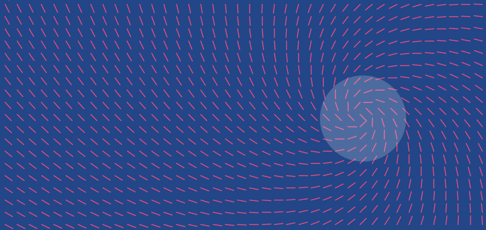

Introduction

We challenged ourselves to create a visual language for our users that synthesizes the classic principles of good design with the innovation and possibility of technology and science. This is material design. This spec is a living document that will be updated as we continue to develop the tenets and specifics of material design.
Goals
Create a visual language that synthesizes classic principles of good design with the innovation and possibility of technology and science.
Develop a single underlying system that allows for a unified experience across platforms and device sizes. Mobile precepts are fundamental, but touch, voice, mouse, and keyboard are all first-class input methods.

Principles

Material is the metaphor
A material metaphor is the unifying theory of a rationalized space and a system of motion. The material is grounded in tactile reality, inspired by the study of paper and ink, yet technologically advanced and open to imagination and magic.
Surfaces and edges of the material provide visual cues that are grounded in reality. The use of familiar tactile attributes helps users quickly understand affordances. Yet the flexibility of the material creates new affordances that supersede those in the physical world, without breaking the rules of physics.
The fundamentals of light, surface, and movement are key to conveying how objects move, interact, and exist in space and in relation to each other. Realistic lighting shows seams, divides space, and indicates moving parts.

Bold, graphic, intentional
Bold, graphic, intentional The foundational elements of print-based design – typography, grids, space, scale, color, and use of imagery – guide visual treatments. These elements do far more than please the eye. They create hierarchy, meaning, and focus.
Deliberate color choices, edge-to-edge imagery, large-scale typography, and intentional white space create a bold and graphic interface that immerse the user in the experience.
An emphasis on user actions makes core functionality immediately apparent and provides waypoints for the user.

Motion provides meaning
Motion respects and reinforces the user as the prime mover. Primary user actions are inflection points that initiate motion, transforming the whole design.
All action takes place in a single environment. Objects are presented to the user without breaking the continuity of experience even as they transform and reorganize.
Motion is meaningful and appropriate, serving to focus attention and maintain continuity. Feedback is subtle yet clear. Transitions are efficient yet coherent.